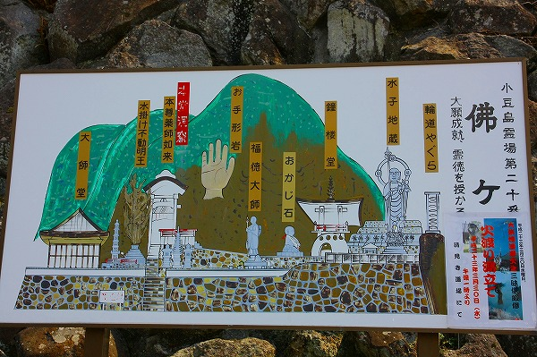
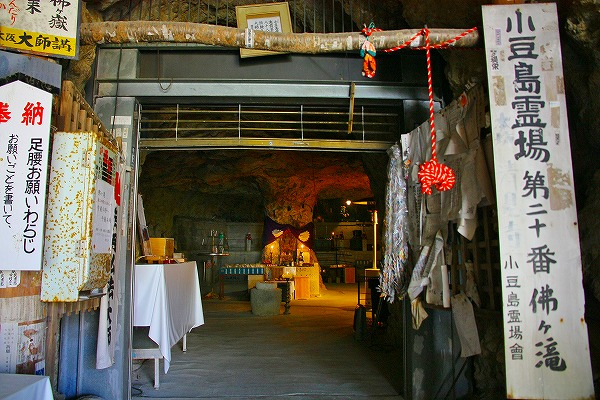
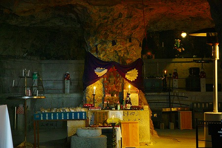
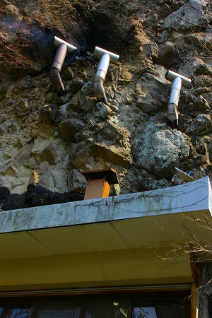
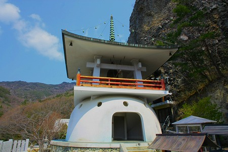
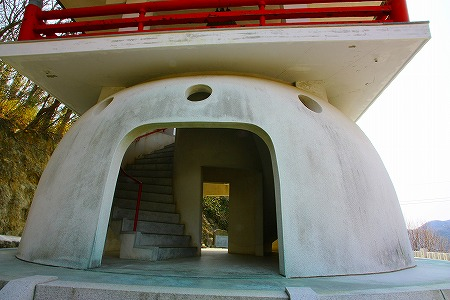
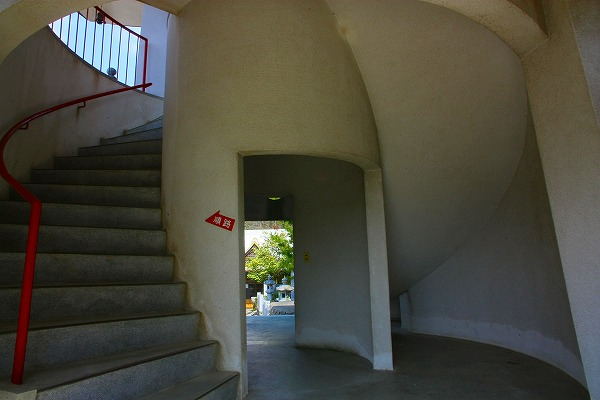
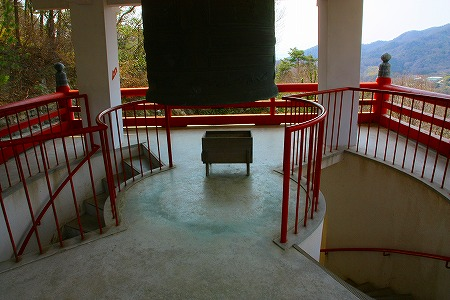
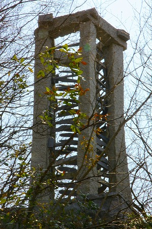
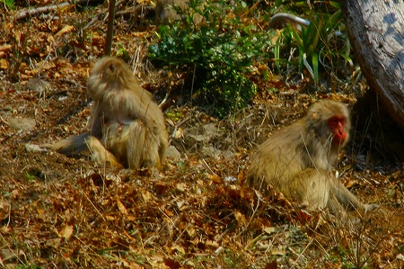

小豆島の洞窟寺院巡り
仏ヶ滝
先ほどまで疲れた眠い腹減ったと散々愚痴っていたが、昼食＆休憩をして７割方復活しましたよ。
てなわけで島四国20番札所の仏ヶ滝。
大師伝説の残る洞窟霊場だ。
看板を見てビックリ！

何この遊園地っぷり。
山の中に巨大な手が生えているじゃないか！
それに右端の輪道やぐらって何だ。イラストを見ると何かの発生装置っぽいんですけど…。
はやる気持ちを抑えつつ、まずは洞窟にご挨拶。

おおお、良い雰囲気じゃないの。
比較的広い堂内の中央には柱があり、そこに不動明王が祀られていた。

洞窟内には様々な供え物が雑然と並び信仰の篤さを物語っていた。
これだけ都合よく柱が残っている、ということは自然ではなく手掘りの洞窟なのだろうか。
柱の奥には薬師如来がおり、そこから入り口まで赤い紐が伸びていた。
何でも足腰と子宝にご利益があるとかお寺の方が仰っていたような気がする。
洞窟の隣には半分岩壁にめり込んだ建物があった。

用途は不明だが、岸壁から直に煙突が飛び出しているのには驚いた。
このお寺で一番目立っていたのは鐘楼だった。

基壇部分が半球状でチョットSFっぽい鐘楼だ。

しかも上部へのアプローチは二重螺旋階段。なかなかカッコイイぞ。

上がるとそこにはポツンと梵鐘がぶら下がっていた。このそっけない感じが何となく東南アジアのお寺っぽくて好きだ。

気になる輪道やぐら。
いわゆる現代彫刻っぽい作品で、やぐらの中に108の石があるそうな。

それ以上のことは深遠すぎてよく判りません。
ああ、そういえば看板にあった巨大な手の正体ですが…
岩壁に巨大な手の跡が見える、というのだが何度見てもよく判りませんでした。アレ…かなぁ〜、といった程度。
結論として最初の看板が一番面白かったな。

猿がウロウロしてました。
次の洞窟へGO！
小豆島の洞窟寺院巡り
珍寺大道場 HOME